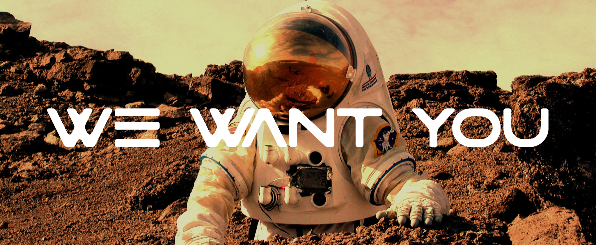

Mars is an incredibly harsh environment: global-covering dust storms, toxic terrain, thin atmosphere, extremely low temperatures. To push the concept of human exploration and colonization of the Red Planet, much more research needs to be done on the adaptation of human physiology to such hard conditions. After 6 months of travel in microgravity condition, having dealt with the shock of a planetary reentry and landing, the first crew on Mars will face the challenge of recovery and rehabilitation, but also the need to assess and mitigate independently any possible health emergency throughout the mission.
To enable these opportunities, we are organizing SMOPS (Space Medicine OPerationS), an analogue mission that will take place between November 21st and December 4th 2021 at the MDRS (Mars Desert Research Station), a research facility owned and managed by The Mars Society in the Moab desert, Utah, USA. For two weeks in isolation, our analogue astronauts will test different technologies and operational scenarios in the field of space medicine, in preparation for future human missions to Mars.
The conditions offered by the MDRS are in many ways similar to the ones that can be found in a possible Mars habitat: desertic environment, crew isolation, spacesuit simulators for external activities, limited living spaces and resources (water and food), local energy (solar panels), and food production (greenhouse). This will allow analogue astronauts on Earth to simulate, as best as possible, the difficulties that human crews will face on the martian surface.
The team
Nation
Italy
Position
PhD Candidate at ISAE-SUPAERO (France)
Paolo Guardabasso is an engineer from Sicily, Italy, with an Aerospace Engineering Master's degree and a specialization in Space Exploration at the Polytechnic University of Turin, Italy. He is currently a PhD candidate at the Institut Supérieur de l'Aéronautique et de l'Espace (ISAE-SUPAERO) in Toulouse, France. The main subjects of his research are space debris, multi-body orbital mechanics and lunar exploration missions, to see the impact that the future missions towards the Moon will have on the debris environment. In his free time, Paolo acts as chief engineer for the Drone Operations for Martian Environment research group, and is an active collaborator of the Space Generation Advisory Council and Mars Planet, the Italian chapter of the Mars Society.
Nation
Canada
Position
Medical Scientist
Dr. Nadia Maarouf is a medical scientist with expertise in Cardiac Sciences, Clinical Pharmacology and Pharmacogenomics. She is currently working as part of a clinical trial team (Clinical Neurosciences) at the University of Calgary, Cumming School of Medicine, Canada. Nadia is also an astronaut-scientist candidate who is very passionate about biomedical space research and advancing the health, safety and wellness of space explorers. Nadia aspires to conduct scientific experiments as a clinician-scientist at the future moon-base, solve a few medical mysteries and use this scientific knowledge to contribute to the improvement of the health and quality of life of all earthlings. Nadia is also trained in advanced wilderness and remote first response and survival management.
Nation
Italy
Position
PhD Candidate at PoliBa (Italy)
Vittorio is a Space Architect from Italy. He received a B.Sc. in Architectural Science and a M.Arch. in Architectural Design from the IUAV of Venice and a M.Sc in Space Architecture and Aerospace Engineering from University of Houston, TX. He works as project manager at DOME, a research group focused on the development of drone assets for the Mars exploration. His research field can be identified in the development of orbital and deep Space Habitats and automation of space processes through AI and robotics. Sailing Skipper since 2003, with more than 30.000 nautical miles, drone pilot, radio operator and Scuba diver, he is also member of SATC (Space Architecture Technical Committee), SGAC (Space Generation Advisory Council) and OeWF (Austrian Space Forum).
Nation
Italy
Position
ISS Payload Integration Manager
Studied Space Engineering, a BSc, two MSc at La Sapienza University of Rome and a PhD about Satellite Navigation at the University of Nottingham. Since April 2017 works at ESA-ESTEC as a contractor for the integration of Payloads on board the ISS. He is also an Analog Astronaut for the OeWF.
Nation
France
Position
Human Factors Expert
A former European Space Agency's Euromoonmars team member. He is a human factor expert for the Human Spaceflight committee of the International Astronautical Federation and an Explorers Club Fellow International specialized in the study of Life in [I.C.E] Isolated, Confined and Extreme environments.
Nation
Italy
Position
CEO and Founder at D-Orbit
Serial entrepreneur, seeking profitable and sustainable expansion of humankind in space. PhD in Space Propulsion, Master in Sustainability, Certificate in Business, former Paracorp Officer, worked at NASA Ames, founder+CEO of D-Orbit. He loves parachute jumping, scuba diving and science fiction books.
Support
Nation
Italy
Position
MSc Graduate in Mechanical Engineering (PoliTO)
Born in Cagliari, he is currently at the end of the MSc in Mechanical Engineering at the Polytechnic of Turin. The MSc thesis field regards the dynamic analysis of elastomeric compounds for gas journal bearings applications. His main interests regard numerical modelling and machine design. His role for the SMOPS Mission consists in outreach activities regarding the space sector to disseminate the interest in science and space exploration.
Nation
Italy
Position
Research Fellow Medical Technologies University of Parma
Federico is a scholar researching at the intersection of technology, healthcare and society and works at the Department of Medicine and Surgery of the University of Parma in Italy, with a wide experience on virtual communities, digital learning, medical simulation and virtual reality. A active member of Marsplanet since 2015 for human factors in the area of communities in harsh environments, zero and microgravity simulation training for space missions. He is in charge of the workflow for outreach, logistics and design of the collaborative digital methodologies for the mission.
Nation
Ireland
Position
Physician at Shannondoc Ltd - Aerospace Medicine expert
Anna Nelson is a physician, with Msc in Aviation Medicine from King’s College ,London. She had collaborated with Austrian Space Agency creating an algorithm of bio-sensors to monitor health of astronauts inside spacesuits. After obtaining her Masters Degree at Kings, she worked as a General Practitioner in Malaysia and eventually became a registered Occupational Health Doctor and worked in Oil and Gas industry in Malaysia. Currently she works and resides in Ireland. Her main interests are Aerospace Medicine and Occupational Health Medicine with special interest in Human Factors.
Nation
Italy
Position
Space Engineer
Laura is an aerospace engineer based in Turin, Italy. She received a M.S in Aerospace Engineering, Space and Propulsion Systems specialization, from Polytechnic of Turin, in 2019. She worked for the two years of her Master in a student team, DIANA, as a mechanical project engineer. She spent a six-months period abroad at University of Denver, Colorado (USA) developing her Master’s Thesis on the study of the Mars Ascent Vehicle in the frame of the Mars Sample Return (MSR) mission. She works as a propulsion system engineer at Thales Alenia Space on the MSR orbiter.
Nation
France
Position
Space engineer Masters in Space exploration and Geophysics
Guillaume Thirion is an aerospace engineer and geophysicist. He received a M.S. in Aerospace Engineering (ENAC, France) in 2018 followed by a Space Systems Engineering Advanced Master (ISAE-Supaero, France) in 2019 and a M.S. in Geophysics (IPGP, France) in 2020. He worked on various projects in various countries from self-replicating robots for lunar exploration to re-entry techniques, lava tubes exploration and Life Support Systems. He is now working at CNES (Toulouse, France) as system engineer for the French-Chinese SVOM mission and is involved in multiple analog initiatives in Europe.
The Space Medicine Operations (SMOPS) analogue mission will bring several experiments and technologies to the Mars Desert Research Station, ainly focused on future astronauts' health monitoring, and on support technologies.
Making sure that the crew is healthy and safe is of paramount importance for any research mission. In the case of an analog space mission this includes monitoring physical health, but also the mental states of the members of the crew, to ensure that they remain healthy in isolation. The SMOPS crew will perform a daily kinesiology exercise routine, measuring its impact on their health and wellbeing and how they cope with stress. Moreover, they will perform several cortisol tests, playing an important role in understanding (but also preventing) potential health risks including high blood pressure, anxiety, high blood sugar, muscle weakness, etc..; the results of this experiment will be analyzed and published by one of the crew members who is a medical researcher at the University of Calgary, Canada. Another experiment will make use of electroencephalography to observe the changes in the crew members’ brains during meditation sessions.
The electroencephalography device
Space suit simulators are a necessary element of analogue space research, because they can increase the degree of fidelity of simulations and they pave the way for space suit technology development. In the frame of space suit and biomonitoring research, the SMOPS crew will test both the BG space suit simulator prototype, produced by Mars Planet, and a pair of sensorised smart shoes, engineered by Vibram and E-Novia group. Both experimental technologies will include several sensors able to measure the crew’s health conditions and the surrounding environment. Moreover, the health parameters of crew members will also be continuously monitored thanks to the Astroskin biomonitor. Such wearable biomonitors include integrated sensors designed to measure the body activity, heart rate, blood pressure and body temperature.
Every space mission will need key, cutting-edge technologies to support the activity of crews on other planets. During the SMOPS missions, the crew will run different experiments aimed at the development of emerging technologies. For example, the quality of air will be monitored within the MDRS habitat, thanks to a life support system device developed by the italian company D-Orbit. Moreover, the use of drones on Mars will be investigated by the Drone Operations for Martian Environment (DOME) research group, performing mapping and station inspection flights with a VTOL (Vertical Take Off Landing) drone. Finally, as additive manufacturing paves the way for in situ resources utilisation, several 3D printed tools will be tested and more will be printed directly at the station, thanks to an industrial-level printer provided by Roboze.
Manned space missions will not only mean taking care of the astronauts; the knowledge we have of the universe is still a very very small fraction of what is out there. It is important to take advantage of the remote location of the MDRS, in the middle of one of the widest deserts on Earth, to train for planetary science experiments as well. One of the SMOPS astronauts will carry out two separate analyses on terrain samples, looking for traces of DNA and micrometeorites.
Every manned/unmanned space mission needs scientific know-how and cutting-edge technology.
The SMOPS crew will take several experiments and technologies to the remote Mars Desert Research Station (Utah, USA). The mission is mainly focused on future astronauts' health monitoring and on supporting technologies for remote locations. The investigation disciplines are:
The SMOPS mission has just received the patronage of the Italian Space Agency (ASI). This is an incredible achievement and an honour for the SMOPS crew and mission organisation team. Stay tuned on our advancements, follow us on Facebook and Instagram!
As the new year starts, the SMOPS mission is ready to take the challenges to come and achieve its objectives! During the Mars to Earth virtual conference, organised by Mars Planet, the SMOPS mission crew has been officially presented to the public and on our social networks. Go check them out in the crew section of the website! Stay tuned on our advancements, follow us on Facebook and Instagram!
After reviewing many applications from smart and inspiring people, the application process comes to an end. The final crew will be an international and diverse group, with different backgrounds and fields of expertise. Stay tuned on our advancements, follow us on Facebook and Instagram!
The Swiss Institute for Disruptive Innovation (SIDI) and the European Center For Space Exploration and Colonization (ECSEC) jump on board on our trip to Mars, becoming official SMOPS mission sponsors. They will support and promote our activities during the coming year. Visit www.sidi-international.org and www.ecsec.space for more information on SIDI and ECSEC!

We are starting the crew selection process today, until the 15th of September. First, the candidates will have to fill out a Google form with some general information and their experience relevant to the mission. After, they will be informed about the outcome of their application and, in case of a positive result, they will be asked to do a video interview with Mars Planet, the organisers of the mission. Interested in joining our crew? Visit the crew section and apply!

Three new experiments have been added to the research that we will carry out during our time at the MDRS next year. We will use drones to support the crew in case of medical emergencies, observe the effects of acupuncture for stressfull situations and test some innovative sensing technologies on smart wearables. Check the research section!
The new mission logo was designed to represent all the elements that matter to the mission. Our focus will be medical operations, hence the Rod of Asclepius, international symbol for medicine. Our simulated martian mission will take place on Earth, with Mars as a final target.
After discussing with the Mars Desert Research Station, the time slot dedicated to SMOPS mission in 2021 has been confirmed. Despite the current COVID-19 situation, the organisation of the mission continues.
Our partners
If you are interested in contributing to our field mission or you want your research objectives to be included in our experiment schedule, contact us!